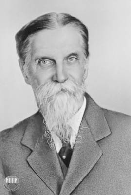

Основоположник русской научной школы физиологов растений

22 мая (3 июня) 1843 - 28 апреля 1920.
Должности и почести
Профессор Московского университета.
Член-корреспондент Петербургской академии наук (1890).
Член Лондонского королевского общества (1911).
Почётный доктор Кембриджа, университетов Женевы и Глазго.
Член-корреспондент Эдинбургского и Манчестерского ботанических обществ.
Член российских учёных обществ: Вольного экономического, Московского физического, Русского физико-химического, СанктПетербургского общества естествоиспытателей, Московского общества испытателей природы, Русского фотографического общества.
Председатель ботанического отделения Общества любителей естествознания, антропологии и этнографии при Московском университете.
Организатор съездов русских естествоиспытателей и врачей, председатель IX съезда.
Член Социалистической академии.
Председатель ассоциации натуралистов и рабочих-самоучек.
Депутат Моссовета (1920).
"Перед вами... чудак. Более 35 лет провёл я, уставившись <...> на зелёный лист в стеклянной трубке, ломая себе голову над разгадкой вопроса: как происходит запасание впрок солнечных лучей."